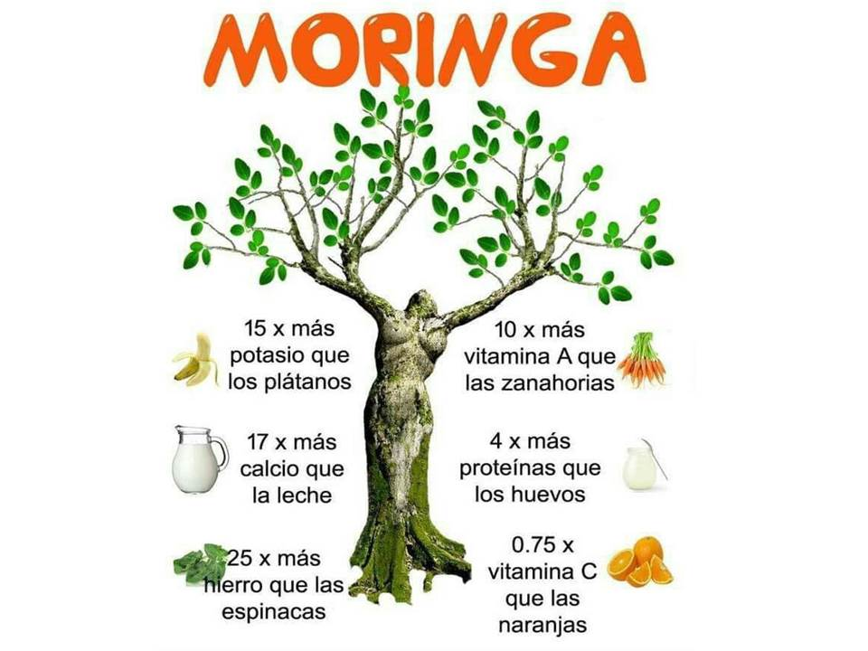
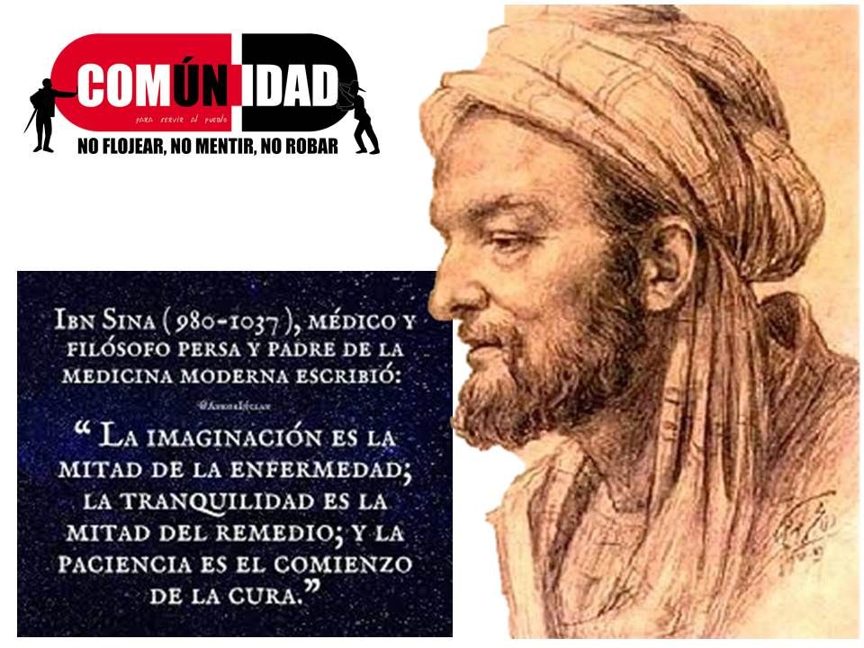

EN LO CULTURAL 1.5.1. Fomentar la investigación y la conciencia crítica sobre los mecanismos de dominación y colonización presentes en las maneras de conocer, producir y convivir, como base para la gestación de nuevas formas de conocimiento, producción y convivencia, fundadas en nuestras tradiciones histórico-culturales y en la plena satisfacción de las necesidades humanas.
EN LA SALUD RESPIRACIÓN CONSCIENTE La nariz tiene un lado derecho y un lado izquierdo; usamos ambos para inspirar y expirar. En realidad son diferentes: la derecha representa el sol y la izquierda la Luna Durante un dolor de cabeza, prueba a cerrar la fosa nasal derecha y utiliza la izquierda para respirar Pasados unos cinco minutos, el dolor de cabeza debe desaparecer. Si te sientes cansado, haz lo contrario: cierra la fosa nasal izquierda y respira por la derecha En un momento tu mente se sentirá aliviada. El lado derecho pertenece al "calor" (El Sol), de modo que se calienta rápidamente, la izquierda es el "frío" (La Luna) La mayoría de las mujeres respira con el lado izquierdo de la nariz. La mayoría de los hombres respiran por la fosa nasal derecha. Presta atención, en el momento de despertar, de qué lado respiras mejor, del lado derecho o del izquierdo? Si es por la izquierda te sentirás cansado.

A continuación, cierra la fosa nasal izquierda y utiliza la derecha para respirar, te sentirás aliviado rápidamente esto debería ser enseñado a los niños y también resulta muy eficaz en los adultos. LA RESPIRACIÓN CONSCIENTE. “El cuerpo se vuelve fuerte y sano; el exceso de grasa desaparece, el rostro resplandece, los ojos centellean y un encanto particular se desprende de toda la personalidad. La voz se vuelve dulce y melodiosa. El apetito ya no es presa de la enfermedad. La digestión se hace con facilidad. Todo el cuerpo se purifica, el espíritu se concentra fácilmente. La práctica constante despierta las fuerzas espirituales latentes, trae la dicha y la paz”..
EL CONOCIMIENTO ¿POR QUÉ NO EXPLICAN SOBRE EL FUNCIONAMIENTO DEL SISTEMA INMUNOLÓGICO? Un naturópata francés lo explica... 🔸Constantemente se nos insta a buscar protección externa que nos salve como usar máscaras, comprar geles hidroalcohólicos, sin informar que estos geles no deben usarse durante varios días seguidos porque son a base de etanol y eliminan la primera barrera inmune natural de nuestro cuerpo: las bacterias y la película de lípidos de nuestra piel, que es una barrera para los virus... 🔸Esto también se debe al uso excesivo de productos antibacterianos en los últimos años, y un malentendido sobre el papel de las bacterias juegan en nuestra inmunidad. 🔸Cuanto más usamos estos geles a base de alcohol, más permeables y sensibles a la epidermis son los virus... ¡Démosle prioridad a los jabones clásicos! 🔸Luego, los medios comienzan a hablarnos de una solución que también vendría de afuera: un futuro tratamiento farmacológico o una vacuna cuyas evaluaciones de autorización de comercialización seguramente serán descuidadas por razones de "emergencia".💊💉 En qué MOMENTO, se le ha explicado a la población que todos tienen la capacidad de fortalecer naturalmente su sistema inmunológico en unos pocos días (los más jóvenes) o en pocas semanas❓ 👉 Esto ciertamente no evitaría la propagación del virus pero fortalecería nuestras defensas contra él y por lo tanto, reduciría la proporción de casos graves, para sanar mucho más rápido en el hogar. ¿ Por qué no involucrar en los canales de información de las plataformas, que dedican el 95% de su tiempo sobre este tema durante varias semanas, a profesionales de la salud que hablan sobre prevención, como nutricionistas, naturópatas, fitoterapeutas, que podrían realizar un inmenso trabajo de información y prevención cerca del público y así aliviar a los médicos que están en el frente? ¿Por qué no decirle a la gente que comer basura, como los productos industriales, procesados y refinados es lo primero que destruye nuestras defensas inmunes❓ ¿Por qué no informar que la eficacia de nuestro sistema inmunitario depende estrechamente de la calidad de nuestra flora intestinal y por lo tanto, de la calidad de lo que comemos❓👇 🔸De modo que las verduras y frutas vivas crudas, locales y de temporada son la mejor manera de fortalecer rápidamente nuestras reservas minerales necesarias para la inmunidad. ¿Por qué no explicar que el ayuno fortalece el sistema inmunitario en solo 3 días❓

¿Por qué no hablar sobre los beneficios de la ducha fría que en pocos días aumenta el nivel de ciertos linfocitos T❓ ¿Por qué no explicar que plantas como la esquinancia, el astrágalo, el sauco, el escaramujo, en sus formas concentradas, aumentan las defensas inmunes en unas pocas semanas❓🌱🌿🍃🍂🌾 👉Habríamos tenido tiempo desde que apareció el virus. ¿Por qué no hablar de la efectividad de los aceites esenciales antivirales, además de vit C en altas dosis y minerales como el zinc, selenio, magnesio❓ ¿ Por qué no hablar de la importancia de la actividad física y los estudios recientes que prueban la rápida efectividad del yoga para fortalecer el sistema inmunológico❓ ¿ Por qué no explicar que el miedo es inmunosupresor❓ Sin embargo, es la única emoción transmitida en este momento por los principales medios de comunicación...un nivel de ansiedad que lo debilita a diario ...💻🖥️📰🗞️ ¿Por qué no explicar a las personas que tienen dentro de ellas un potencial de defensa y curación que es infinitamente más poderoso que cualquier droga en el mundo y que puede activarse rápidamente❓ ❇️NUESTRO CUERPO❇️ es una verdadera máquina de curación perfecta.👇En este período cuando finalmente tenemos tiempo, es hora de interesarnos en nuestro propio funcionamiento, reclamar nuestro poder personal, tomar el control de nuestra salud y nuestro futuro. ❇️A ver si salen de las dudas y sobre todo del MIEDO artificial y debilitante, se empoderen y Traer al conciértenlos q tenemos en nuestro subconsciente